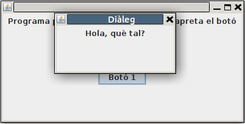

6.- Diàlegs
Els diàlegs són unes finestres (normalment més menudes que la principal, el JFrame) que fins i tot poden ser no redimensionables, i que poden ser modals, cosa que significa que fins que no es tanca el diàleg, no podem fer res en la finestra principal.
En crearem un d'exemple, però sobretot veurem dos components que són diàlegs i per tant suposaran obrir una finstre de diàleg.
Aquest d'exemple és molt senzill. Només posem un text i esperem a que es tanque la finestre. Observeu com en el constructor del JDialog cridem al constructor heretat (super()) passant-li 3 paràmetres:
- El primer fa referència al a la finestra de la qual depén, és a dir a son pare.
- El segon és el títol de la finstre diàleg.
- El tercer és un booleà que indica si ha de ser modal o no.
import javax.swing.JDialog;
import javax.swing.JLabel;
import javax.swing.JPanel;
public class Finestra_dialeg extends JDialog{
public Finestra_dialeg(Finestra f){
super(f,"Diàleg",true);
this.setSize(200,100);
JPanel panell=new JPanel();
panell.add(new JLabel("Hola, què tal?"));
this.getContentPane().add(panell);
this.setVisible(true);
}
}
Des del JFrame principal invoquem al diàleg. En aquest exemple quan apretem un botó. Observeu com al constructor del diàleg li passem la referència a l'actual finestra, per a que puga saber de qui depén.
import java.awt.FlowLayout;
import java.awt.GridLayout;
import java.awt.event.ActionEvent;
import java.awt.event.ActionListener;
import javax.swing.JButton;
import javax.swing.JFrame;
import javax.swing.JLabel;
import javax.swing.JPanel;
public class Finestra extends JFrame implements ActionListener{
JButton boto1 = new JButton("Botó 1");
public void iniciar(){
setSize(400,200);
getContentPane().setLayout(new GridLayout(2,1));
JPanel panell1 = new JPanel(new FlowLayout());
JPanel panell2 = new JPanel(new FlowLayout());
getContentPane().add(panell1);
getContentPane().add(panell2);
panell1.add(new JLabel("Programa principal. Per anar al diàleg apreta el botó"));
panell2.add(boto1);
this.setDefaultCloseOperation(JFrame.EXIT_ON_CLOSE);
setVisible(true);
boto1.addActionListener(this);
}
@Override
public void actionPerformed(ActionEvent e) {
if (e.getSource()==boto1){
System.out.println("Obrint diàleg ...");
Finestra_dialeg dialeg = new Finestra_dialeg(this);
}
}
}

Llicenciat sota la Llicència Creative Commons Reconeixement NoComercial SenseObraDerivada 2.5